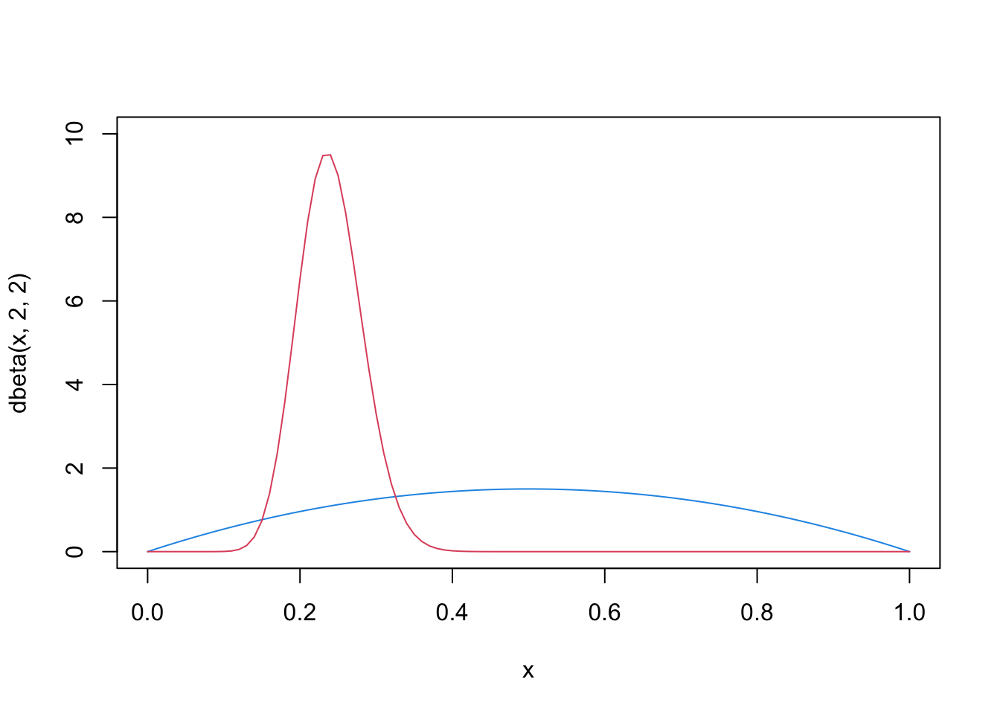

Bayesians take a different approach to statistical inference. Bayesians treat the unknown parameters as random variables associated with distributions. Instead of trying to estimate the “true” value of the parameters, the distribution of the parameters gets updated with the information contained in the data.
Definition 60.1 (Prior distribution) Suppose we have a statistical model with parameter \(\theta\). If we treat \(\theta\) as random, then the distribution that one assigns to \(\theta\) before observing the other random variables of interest is called its prior distribution, denoted as \(p(\theta)\).
Definition 60.2 (Posterior distribution) Consider a statistical inference problem with parameter \(\theta\) and the vector observables \(\boldsymbol{x}=(x_1,...,x_n)\). The conditional distribution of \(\theta\) given \(\boldsymbol{x}\) is called the posterior distribution of \(\theta\), denoted as \(p(\theta|\boldsymbol{x})\).
Theorem 60.1 (Bayesian inference) Suppose random variables \(X_1, ..., X_n\) has joint probability (density) function \(f(x_1, ..., x_n | \theta)\). The parameter \(\theta\) has prior distribution \(p(\theta)\). Then the posterior distribution of \(\theta\) is \[p(\theta | \boldsymbol{x})
= \frac{f(\boldsymbol{x}|\theta)p(\theta)}{f(\boldsymbol{x})}
\propto f(\boldsymbol{x}|\theta)p(\theta).\]\(f(\boldsymbol{x}|\theta)p(\theta)\) is also known as the likelihood function.
The essence of Bayesian inference is to update the distribution of the parameter with the information in the data. The posterior distribution is a function of \(\theta\), the denominator bahaves like a normalizing constant. So we don’t lost anything if we only focus on the likelihood function and the prior.
Definition 60.3 (Conjugate prior) In Bayesian inference, if, given the likelihood function \(f(x|\theta)\), the posterior distribution \(p(\theta|x)\) is in the same probability distribution family as the prior distribution \(p(\theta)\), the prior and posterior are then called conjugate distributions with respect to that likelihood function. The prior is called a conjugate prior.
A conjugate prior is an algebraic convenience, giving a closed-form expression for the posterior; otherwise, numerical integration would be necessary.
Theorem 60.2 (Beta-Binomial conjugacy) Let \(X\sim \textrm{Bin}(n,\theta)\). Assume \(\theta\) has prior distribution: \(p(\theta)\sim\textrm{Beta}(a,b)\). We observe \(X=k\). Then the posterior distribution is: \[p(\theta|X = k) \sim\textrm{Beta}(a+k,b+n-k).\]
Proof. The likelihood function of Binomial distribution is: \[f(k|\theta) = \binom{n}{k}\theta^{k}(1-\theta)^{n-k}.\] Combining the likelihood and the prior: \[\begin{aligned}
p(\theta|k) & \propto f(k|\theta)p(\theta)\\
& \propto \binom{n}{k}\theta^{k}(1-\theta)^{n-k}\cdot
\frac{1}{\beta(a,b)} \theta^{a-1}(1-\theta)^{b-1}\\
& \propto \theta^{a+k-1}(1-\theta)^{b+n-k-1}.
\end{aligned}\] This is the kernel of \(\textrm{Beta}(a+k,b+n-k)\).
# unknown parameterp <-0.3# number of observationsn <-100# generate Bernoulli observationsX <-1* (runif(n) < p)# sum of positive outcomesk <-sum(X)# the prior distribution (blue)curve(dbeta(x, 2, 2), col=4, ylim=c(0,10))# the posterior distribution (red)curve(dbeta(x, 2+k, 2+n-k), col=2, add=TRUE)

Theorem 60.3 (Poisson-Gamma conjugacy) Let \(X\sim \textrm{Pois}(\lambda)\). Assume the unknown parameter \(\lambda\) has a prior distribution: \(p(\lambda) \sim \textrm{Gamma}(a,b)\). We observe \(X=k\). Then the posterior distribution is: \[p(\lambda | k) \sim \textrm{Gamma}(a+k, b+1).\]
Proof. The likelihood function (Poisson PMF): \[f(k | \lambda) = \frac{\lambda^k e^{-\lambda}}{k!}\] The prior (Gamma PDF): \[p(\lambda) = \frac{b^a}{\Gamma(a)} \lambda^{a-1} e^{-b\lambda}\]
We multiply the components, focusing only on the parts involving \(\lambda\): \[p(\lambda | k) \propto (\lambda^k e^{-\lambda}) \cdot (\lambda^{a-1} e^{-b\lambda})\]
We recognize this is the kernel of \(\textrm{Gamma}(a+k, b+1)\).
Theorem 60.4 (Normal-normal conjugacy) Let \(X_1,...,X_n \overset{iid}{\sim} N(\mu,\sigma^2)\) where \(\mu\) is unknown and \(\sigma^2\) is known. Assume the prior distribution is also normal: \(p(\mu) \sim N(\mu_0, v_0^2)\). Then the posterior distribution is also normal: \[p(\mu|\boldsymbol{x}) \sim N
\left( \frac{\sigma^2\mu_0+nv_0^2\bar{x}_n}{\sigma^2+nv_0^2},
\frac{\sigma^2v_0^2}{\sigma^2 + nv_0^2}\right).\]
Proof. The Prior distribution, ignoring the constant, is: \[p(\mu) \propto \exp\left( -\frac{1}{2v_0^2}(\mu - \mu_0)^2 \right)\]
Group terms by \(\mu^2\) and \(\mu\) and ignore the constant: \[p(\mu | \boldsymbol{x}) \propto \exp\left( -\frac{1}{2} \left[ \mu^2 \left( \frac{1}{v_0^2} + \frac{n}{\sigma^2} \right) - 2\mu \left( \frac{\mu_0}{v_0^2} + \frac{n\bar{x}}{\sigma^2} \right) \right] \right)\]
We want the posterior to look like a Normal distribution \(N(\mu_n, v_n^2)\), which has the form: \[\exp\left( -\frac{1}{2v_n^2}(\mu - \mu_n)^2 \right) \propto \exp\left( -\frac{1}{2} \left[ \frac{\mu^2}{v_n^2} - \frac{2\mu\mu_n}{v_n^2} \right] \right)\]
We match the coefficients from our derived equation to this standard form: \[\frac{1}{v_n^2} = \frac{1}{v_0^2} + \frac{n}{\sigma^2} = \frac{\sigma^2 + n v_0^2}{v_0^2 \sigma^2}\]